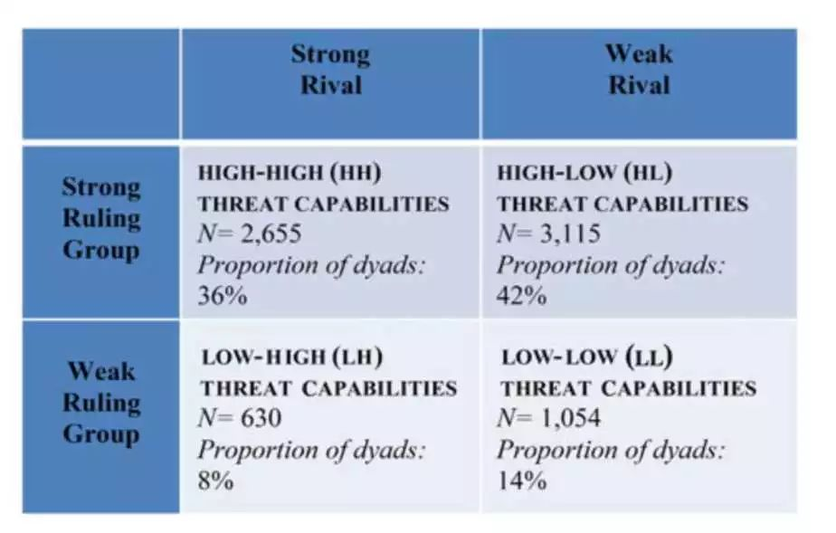
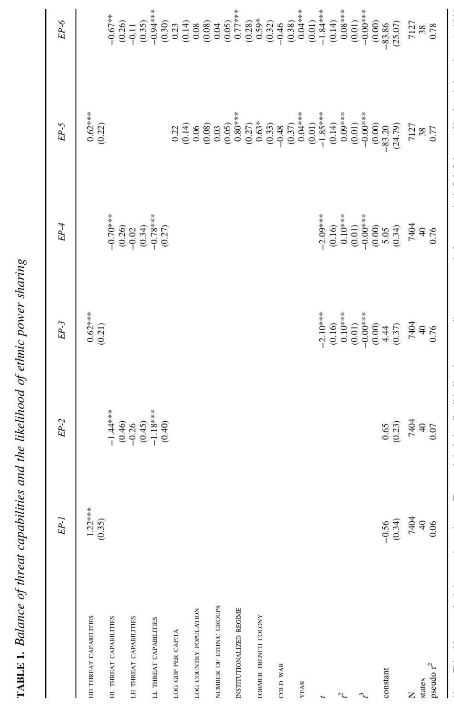
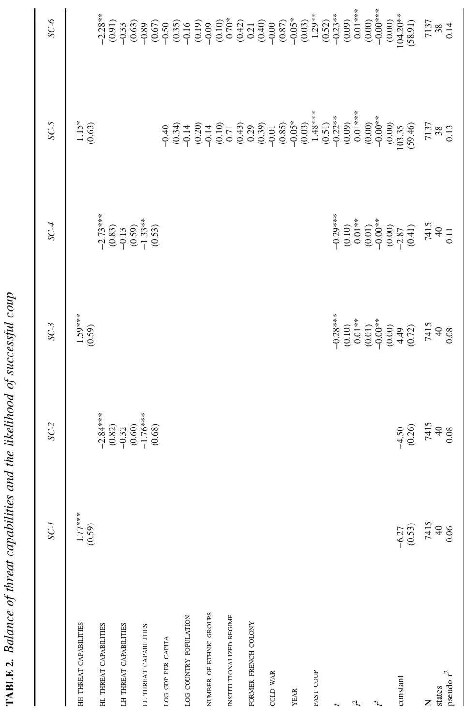
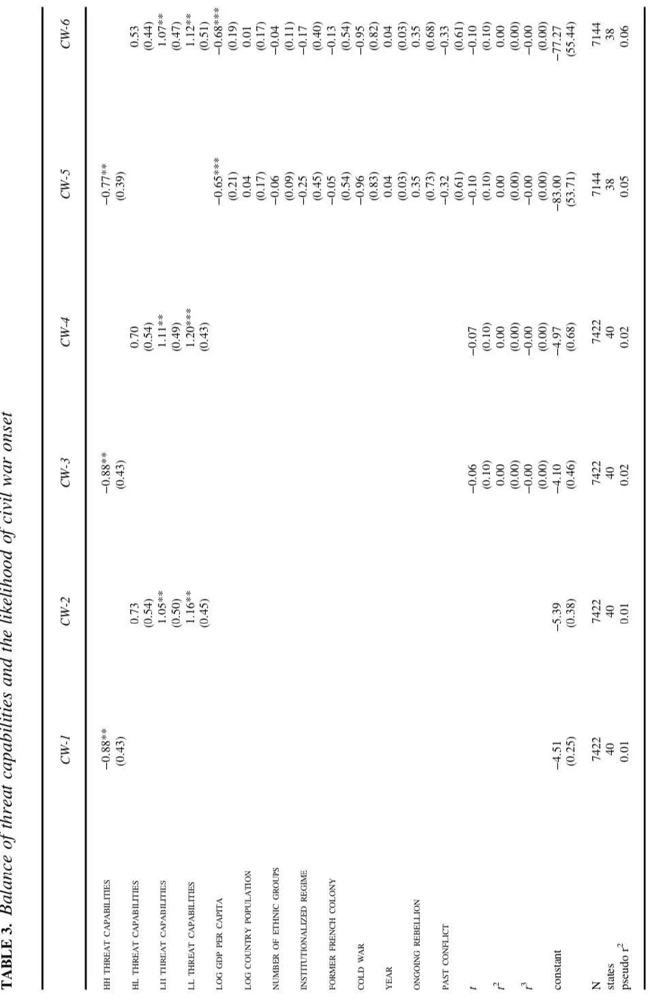
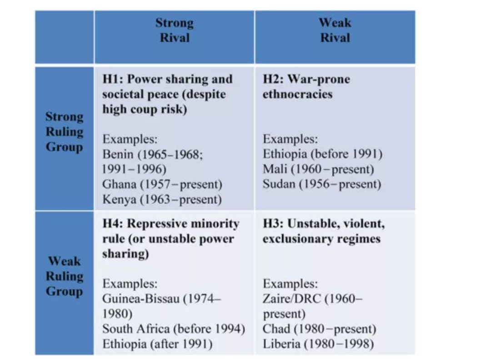

Roessler&Ohls|脆弱国家的权力平衡与权力分享
收录于合集
文献来源： Roessler, P., & Ohls, D. (2018). Self-Enforcing Power Sharing in Weak States. International Organization , 72(2), 423-454.
作者简介：
Philip Roessler，威廉与玛丽学院政府系副教授，非洲发展研究中心主任，研究方向为撒哈拉以南非洲的国家构建和发展。其个人主页参见：https://philiproessler.net/ 该学者另一篇发表在WP上关于非洲国家政变和内战的研究参见：Philip Roessler | 非洲的个人统治、政变和内战
David Ohls，美利坚大学国际服务学院讲师
族群间的暴力冲突是二战后发生大规模暴力、经济停滞、区域动荡的关键性原因之一。 族群冲突在缺乏权力分配和权威扩撒有效机制的弱国家尤为常见。但并不是所有的弱国家都遭受族群暴力的折磨，一些国家通过对立族群间的权力分享机制实现了对大规模政治暴力的有效管控。
因此，暴力的威胁在什么情况下会导致权力分享下的生产性平衡(productive equilibrium)，在什么情况下会导致排除- 冲突循环的再生产呢？本文认为，能否实现权力分享的和平效能关键在于社会权力的对比。
弱国家的权力分享难题
权力分享指的是两组以上的对立精英团体共同存在于同一个统治联盟中，其中每一方都同意从对国家的控制中分配收益并且彼此间对通过暴力来获得更大权力份额的行为进行限制。
在对权力分享的解释中，既有研究倾向于关注正式制度（例如政党、议会）和外部第三方调停者的作用。但是战后大多数权力分享型政权大多是在没有外部调停者，或者是在正式制度能力非常薄弱的国家出现的。在这种情况下，真正维持权力分享机制的又是什么呢？有人认为， 暴力威胁的平衡是确保权力分享机制维持的关键因素。但暴力既可以成为自卫的工具，也可以成为攫取更多权力的利器。在脆弱国家中，各方无法对不使用暴力来获取更多权力做出可信承诺是不稳定的一个重要来源。在脆弱国家，由于行政能力的不足，往往要通过对众多竞争派别（rival group)的吸纳来拓展国家的控制范围。但这种吸纳也降低了竞争派别通过政变来获取政权的成本。如果统治者无法相信来自竞争派别参与权力分享机制的承诺，那么他们似乎应该宁愿采取族群排除策略。不过也有一些弱国家冒着政变的风险采用权力分享的策略，那么造成这种不同的原因又是什么呢？
可信威胁和权力分享自我强化机制的起源
权力平衡和包容性统治
如果竞争性集团的威胁能力（从自己的社会基础上汲取用于夺取国家政权资源的能力）很强，让追求决定性族群的地位的代价是进行一场昂贵且不一定胜利的内战，那么排除性策略就是得不偿失的。同样，其他族群在面对威胁能力强大的统治族群时，也会认为发动内战收效甚微的。只有两边都发现选择排除策略收益甚微时，权力分享机制才是一个好的选择。因此，权力平衡是维持权力分享的关键。权力分享也因权力平衡而成为了一个自我强化的机制，因为权力平衡约束了任何一方攫取更多权力的期望。
但是双方强大的动员能力并没有解决在政府内部发动政变方面的承诺难题。因此我们可以认为，这种权力分享的安排是引入政变的风险来替代内战的风险。之所以威权统治者能接受这种安排，可能是因为，由于双方强大的动员能力，面对全面内战的风险，统治者在统治集团的压力下难以拒绝权力分享的安排，尽管这可能会危及他个人对权力的控制。但同样的事情就很难发生在战争能力弱的族群之中。在这些族群中，族群利益和统治者利益更加匹配。来自强大对手的政变不仅威胁统治者自己的位子，还要危机族群所掌控的权力份额，因为他们没有能力遏制新的统治集团垄断所有政治权力。在这种情况下，统治者和统治集团都会支持政治排除的策略。
重思内战
大多数研究都把内战和暴动(insurgency)等同视之。只有还存在对政府的有效抵抗，那么暴动就可以视为是成功的。正如Henry Kissinger所说“只要游击队没有失败，那他就是成功的”。因此远离首都、邻国的庇护、多山的地形和族群聚居成为了滋生暴动的有利条件。 本文认为，内战不仅仅是武装的暴动，更是一个有组织的、武装反对派同中央政府围绕国家权力展开的竞争。在这一意义上，在偏远、多山、远离首都地带的武装叛乱是一个弱小而非严峻的威胁。
研究假设
根据前文的理论分析，作者提出了四个研究假设：
H1：当统治集团和竞争集团都有强大的威胁能力时，竞争集团更容易被中央政府所吸纳，这削弱了爆发内战的风险但是增加了政变发生的风险。
H2：当统治集团的威胁能力高而竞争集团的威胁能力弱时，竞争集团更容易被中央政府所排斥，这增加了爆发内战的风险但是削弱了政变发生的风险。
H3：当统治集团的威胁能力低而竞争集团的威胁能力高时，竞争集团更容易被中央政府所排斥，这增加了爆发内战的风险但是削弱了政变发生的风险。
H4：当统治集团和竞争集团的威胁能力都很弱时，竞争集团更容易被中央政府所排斥，这增加了爆发内战的风险但是削弱了政变发生的风险。
经验验证
本文采用混合研究方法，分别采用量化和定性方法对研究假设进行检验。
定量经验验证
数据与变量
为了对研究假设进行检验，作者主要关注了撒哈拉以南的非洲。“强社会弱国家”可以说是非洲在去殖民化后政治秩序的一个特征。此外，独立后非洲政治的关键几乎完全在于对中央政府的控制。 60年代成立的非洲统一组织（非盟的前身）确立了殖民时期国家边界的不可更易性，并且确立了强大的制度和规范以抵制国家分裂，这就削弱了分离作为对边缘化和歧视的回应的可能。因此，即便是最为边缘的群体也不得不把控制中央政府作为改善现状的方法。
为了验证假设，本文使用了族群权力关系（Ethnic Power Relations 2014)数据集。该数据集通过对专家的调查提供了关于政治相关的族群在中央政府中被排斥或被包容的信息。
模型包括三个因变量，第一个是族群权力分享，通过该年是否有一个非统治族群被纳入到统治联盟中来测量。第二个是成功的政变，通过该年给定族群是否是成功政变关键谋划着来测量。第三个是叛乱，通过该年给定族群是否发动了一场武装叛乱或暴动来反对中央政府来测量。
为了测量威胁能力，本文主要基于两个因素。 第一个是该族群的人口规模，通过该族群人口占国家总人口比重来测量。第二个是测量该族群主要聚居地与首都之间的距离。 一般认为， 两者之间的距离越近，对政权所造成的威胁就越大 。这两个数据都被标准化处理，并且越近的距离、越大规模的族群其相应得分就越高。样本中威胁能力的份最低位0.03，最高为0.97。
本文的一个关键自变量就是统治集团和其竞争者之间威胁能力的对比。 根据前面对各个族群威胁能力的测量和假设中所分出的四种类型，文中构造了四个虚拟变量。变量名及相关描述性统计见下图。

模型中的其余变量为控制变量。
结果
正如表一所示，假设一得到了证明。变量HH与族群间的权力分享显著相关。HL和LL则与之呈显著的负相关。在控制变量中仅有institutionalized regime和year两项与权力分享之间具有稳健的效应。这说明， 即便在族群条件较差的情况下，制度化更强的政权也会促进权力分享。 后者说明，非洲的政府越来越倾向于采取包容策略。通过表二我们可以发现，成功的政变更容易出现在HH组合中，尤其是与HL组合相比。表三的结果同样符合作者的预期，HH与内战之间呈显著的负相关，其他因变量都与之呈正相关。



定性经验验证
**
**
下图是相应分类的代表性案例，作者分别进行了分析。

H1：高-高威胁能力——加纳和贝宁
加纳和贝宁都是非洲的小国，两国的疆域都被分为四个主要民族的聚居区域，因此每个族群都难以单独进行统治。在这两个国家中，虽然存在着政党政治，但是精英间的战略博弈往往通过非正式和个人的渠道。在独立后十年，这两个国家都发生过五次成功的政变。这并不是说这两个国家的领导人不想通过族群界限来巩固自身的权力。但一旦他们这样做了，其竞争对手就开始进行大规模的民众动员，笼罩国家的内战阴云最终总是能够扭转族群排斥策略。
H2：高-低威胁能力——苏丹
苏丹独立后由三个阿拉伯部落占国家政治中的统治性地位。这三个部落主要居住于首都附近的尼罗河谷，并且其人口占国家总人口的15%，是所有族群中威胁能力得分最高的。这些阿拉伯部落在国家的政治安排中几乎没有为主要居住在达尔富尔和南苏丹的其他非阿拉伯群体留下空间。由于苏丹的国家体量和其他族群的碎片化程度，虽然来自边疆地区的反抗一直没有停歇，但是几乎不可能对中央政府造成实质性的威胁。因此有观察家甚至认为苏丹的内战对于统治精英来说是一场“完美战争”。最终在国际压力和第三方调解下，南苏丹才取得了独立。
H3：低-低威胁能力——利比里亚
1980年，萨缪尔·多伊率领的军官团通过政变攫取了政权，推翻了美洲利比里亚人在利比里亚153年的统治，成为利比里亚首位土著国家领导人。但是多伊也出身自一个内地非常小族群。由于自己族群的威胁能力过低，如果他失去权力，他的族群几乎不可能重返国家的政治中心。起初多伊和其他内地小族群分享权力，尤其是他的高中好友奎翁巴所领导的吉奥人。但是多伊后来越来越难以容忍奎翁巴一直担任军队的领导，并且打算对他进行清洗。奎翁巴逃出了首都，并且动员自己的族人对抗中央政府。1985年，奎翁巴从塞拉利昂对利比里亚政府进行了攻击，他仅仅带领24人的小队伍攻进了首都并且缺乏本地的支持力量。在奎翁巴失败后，多伊继续其族群排斥策略，最终也导致了1989年的内战。
H4：低-高威胁能力——几内亚比绍和南非
和利比里亚一样，几内亚比绍也推翻了美洲利比里亚人的统治，但建立起的政府在政治上被规模仅有几千人的佛得角人统治。尽管政府中是佛得角人占主导地位，但是军队中，尤其是低级军官和士兵主要是巴兰塔人。巴兰塔人也证实几内亚比绍人口最多的民族，占总人口比重的30%。最终不满政治上低人一等的巴兰塔人于1980年推翻了佛得角人的统治。南非的阿非利加人（南非白人）则选择了另一条道路。尽管阿非利加人的绝对数量不少，但他们仍然只占国家总人口的10%。阿非利加人制度化了种族隔离巩固了自身的统治地位。由此激起的社会抗争在80年代几乎引起了内战。
几内亚比绍和南非都揭示了少数群体试图统治较大群体所面临的严重战略困境。试图部分地容纳他们的种族对手可能导致政变，但排除它们可能引发内战。
结论
本文主要关注了在缺乏外部调解者和强大政治制度的弱国家中的权力分享。与大多数人的直觉相反， 本文发现族群间的权力分享容易发生在统治族群和竞争性群体战争能力都很强的情况下。 量化和定性的经验检验都支持了这一理论。本文也是第一篇论及脆弱国家中社会权力的分布如何导致持久的权力分享机制的研究。由此，作者还解开了内战与政变之间的战略关系。
本文也为未来的研究指出了几个值得关注的问题。是否排斥- 内战平衡的部分由一个国家族群分布地理所决定？是否这些国家注定要陷入在政治排斥和内战的循环？在何种程度上，一个国家社会力量的平衡能够促进民主巩固？政治制度化能否在族群地理分布条件不乐观的情况下促进族群间的权力分享？虽然文中的回归结果支持了这一论点，但是我们需要进一步的研究。最后，潜在的分离主义如何影响战略动态情境并增加边缘族群与统治集团的议价能力值得后续跟踪关注。
编译：赵德昊
审读：杨端程
编辑：吴温泉


政文观止
微信扫一扫赞赏作者 __赞赏
已喜欢，对作者说句悄悄话
取消 __
发送给作者
发送
最多40字，当前共字
上一页 1/3 下一页
长按二维码向我转账
受苹果公司新规定影响，微信 iOS 版的赞赏功能被关闭，可通过二维码转账支持公众号。